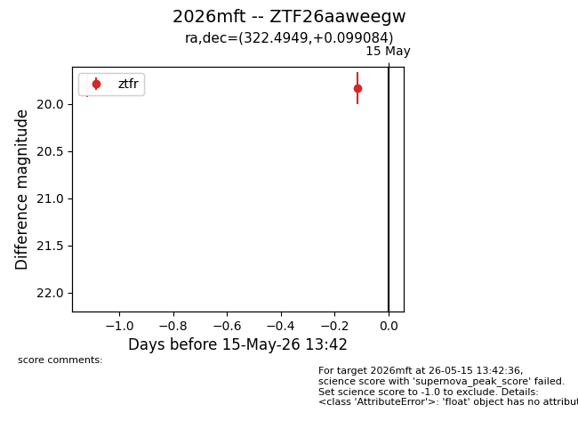
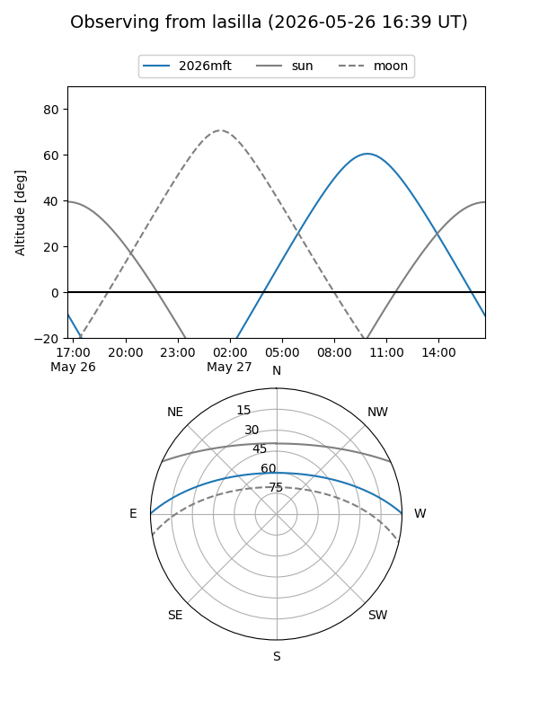
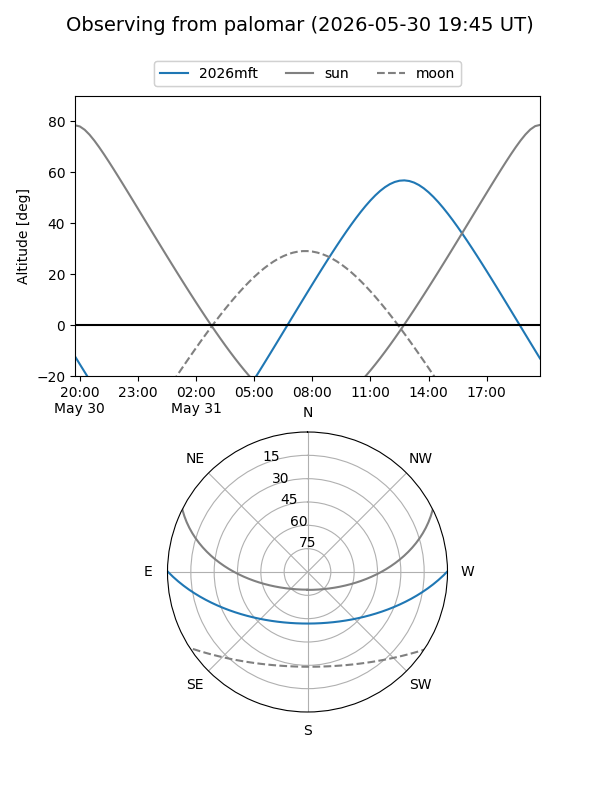
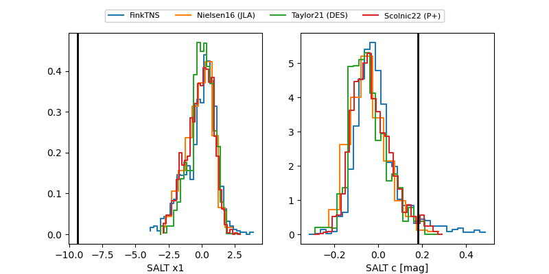

2026mft
Target 2026mft at 2026-05-15 13:44
Aliases and brokers:
FINK: link
Lasair: link
ALeRCE: link
TNS: link
YSE: link
alt names
ZTF26aaweegw (ztf,fink_ztf)
2026mft (tns,yse)
Coordinates:
equatorial (ra, dec) = 322.4949,+0.09908
equatorial (HMS+DMS) = 21:29:58.78,+00:05:56.70
galactic (l, b) = (53.7235,-34.53674)
Flags:
Photometry:
last ztfr=19.83
2 ztfr detections
Lightcurve

Visibility


Additional plots
